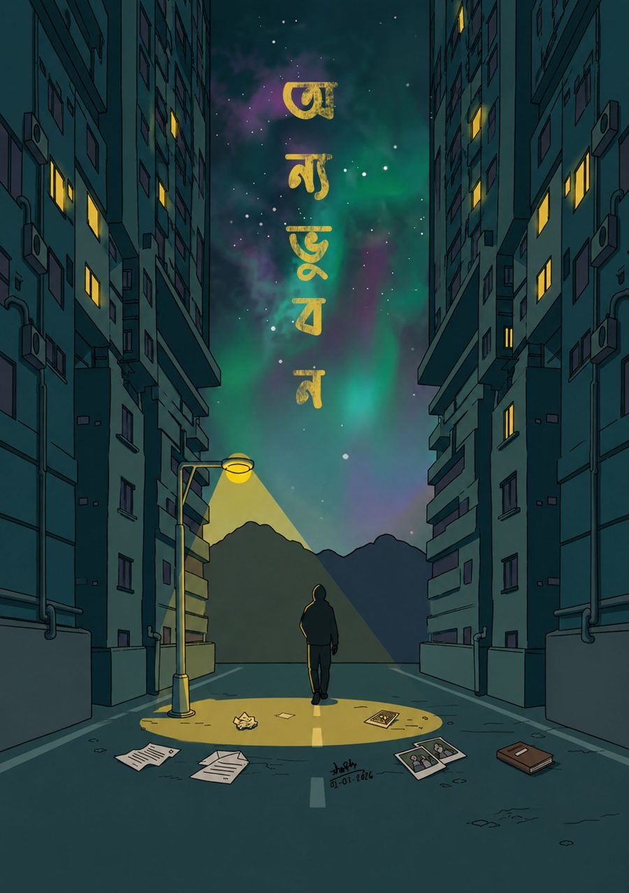
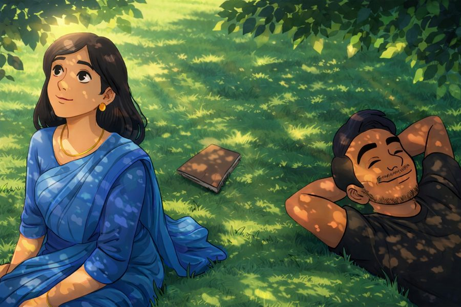
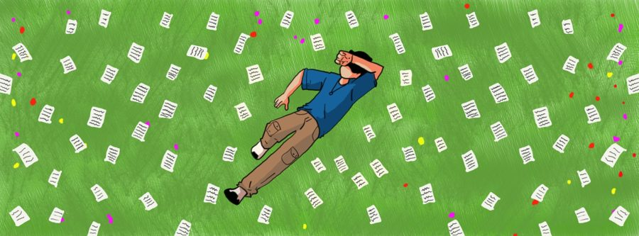
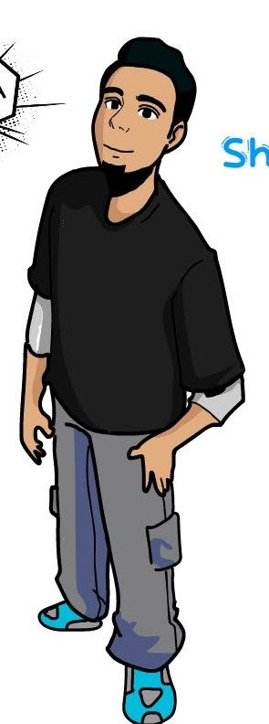

যা শিখেছি, আর যা এঁকেছি
what I've learned, what I've drawn
কোর্স করে শেখা, তারপর Boi.Flash ও AIMERS-এর পেইজ পরিচালনায় প্রয়োগ করা।
Learned through a course, then applied it running the Boi.Flash and AIMERS pages.
কোর্স করে শেখা — মানুষের সাথে সঠিকভাবে, ভদ্রতা বজায় রেখে কথা বলা ও যোগাযোগ করা।
Learned through a course — speaking and connecting with people properly, with courtesy.
সোশ্যাল মিডিয়া পোস্ট/কভার থেকে থাম্বনেইল/পোস্টার-স্টাইল গ্রাফিক্স — দুই ধরনের কাজেই ব্যবহার করেছি।
From social media posts and covers to thumbnail/poster-style graphics — used across both kinds of work.
কিছু নির্বাচিত কাজ।
A few selected pieces.




তুমি খুঁজে পেয়েছ। বেশিরভাগ ভিজিটর এই কোণাটা কখনো দেখে না — অনেকটা আমাদের মতোই, যারা কাউকে পুরোপুরি দেখি না, শুধু যতটা সে দেখাতে দেয়। এই সাইটের বাইরেও আমি আছি। সেটা খোঁজার কোনো শর্টকাট নেই। কিন্তু এতদূর খুঁজেছ বলে — ধন্যবাদ।
You found it. Most visitors never see this corner — a little like how we never fully see anyone, only as much as they choose to show. There is more of me outside this site. There is no shortcut to finding it. But since you looked this far — thank you.
— Shahed